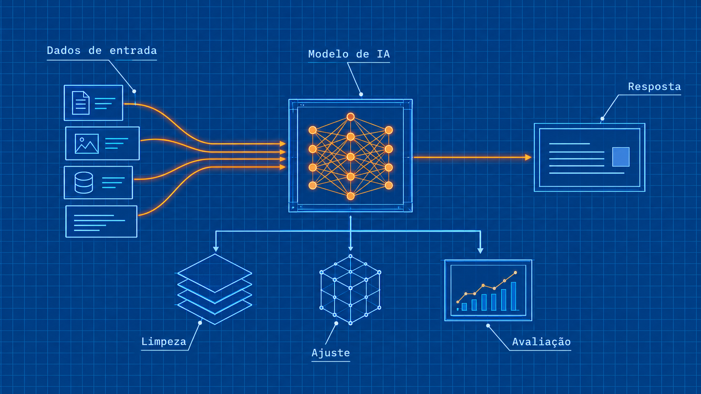
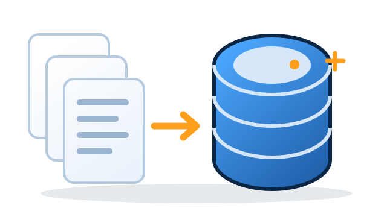
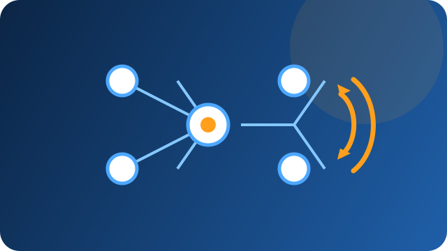

As IAs são ferramentas que podem ser muito úteis para a solução de problemas sem a
necessidade de ter um pensamento humano, e sim uma máquina pensa para você, trazendo
soluções.

Planejamento de uma IA
Passo a passo
Definição do problema
Para a criação da IA, é necessário saber algumas coisas, como:
Qual o problema que necessita de resolução?
Quais as principais características do problema?
Quais as limitações e restrições que a IA tem?
Quais os dados que a IA tem acesso?
Se, por exemplo, se quiser criar um chat de IA para se trazer respostas a perguntas variadas
dos usuários, consegue se dizer que:
O problema é a necessidade de respostas para perguntas sortidas;
As características do problema são: A necessidade de entendimento de uma linguagem que
pode ser errada em relação a norma padrão, no geral todo tipo de linguagem, e respostas
precisas e completas;
As principais limitações é que pode ter uma demora na resposta e pode acontecer
respostas erradas por desentendimento do que foi dito;
Os dados necessários são: Uma grande quantidade de dados sobre todos os assuntos
possíveis e tipos de linguagem.
Coleta de dados

Após fazer as perguntas, é necessário coletar dados relevantes para o funcionamento da IA
poder resolver a questão apresentada;
Esses dados coletados precisam ser relevantes e suficientes para o aprendizado da IA. É
importante também que esses arquivos sejam relevantes e de procedência boa, para não haver
informações falsas.
Por exemplo, caso for criar uma IA como dita anteriormente, é necessário colocar chats de
conversa com diversos tipos de linguagem para que a IA saiba como conversar com o usuário.
Fazendo isso, a IA aprende padrões e consegue sempre fazer de maneira correta o que for
pedido.
Limpeza e pré-processamento de dados
Agora, já com os dados coletados, é necessário fazer uma análise dos dados, e juntamente com
isso uma limpeza de dados desnecessários, podendo ser necessário também realizar a
normalização de dados e codificação de recursos categóricos.
O objetivo de realizar esta preparação é para que a IA possa aprender de forma adequada.
Ao realizar a limpeza e pré-processamento, é possível garantir que a IA esteja aprendendo com
informações precisas e relevantes, aumentando a probabilidade que ela consiga resolver o
problema.
Treinamento do modelo

Agora, com dados de boa qualidade e limpos, deve-se treinar a IA. Para isso, é necessário
utilizar um algoritmo de aprendizado de máquina.
Existem diversas técnicas, como regressão linear, que podem ser escolhidas com base no tipo
de problema que se deseja resolver.
Durante o treinamento, o modelo é alimentado com dados de entrada e suas respectivas saídas.
Com base nessas informações, a IA ajusta seus parâmetros para fazer previsões cada vez mais
assertivas.
A escolha do algoritmo de aprendizado e configurações de parâmetro são importantes para
garantir que a IA seja treinada de forma adequada.
Avaliação do modelo
Após o treinamento da IA, a avaliação se torna crucial para observar se os resultados estão
corretos, bem como a cibersegurança do modelo. Além disso, os testes realizados devem
avaliar a precisão e o desempenho em cenários diversos, simulando situações reais.
É importante lembrar que é essencial o teste em diferentes conjuntos de dados, evitando o
overfitting e garantindo sua capacidade de lidar com situações imprevistas.
A avaliação cuidadosa e abrangente é uma etapa crítica no desenvolvimento de modelos de IA,
então, jamais pule este passo.
Ajuste do modelo
Se a IA não estiver se saindo bem na avaliação, é preciso realizar algumas mudanças para
melhorar sua precisão e desempenho. Isso pode envolver ajustar os parâmetros para evitar
problemas como overfitting e underfitting (sobreajuste e sub-ajuste).
Se os ajustes não forem suficientes, pode ser necessário tentar uma técnica de aprendizado de
máquina diferente. O importante é continuar avaliando regularmente o desempenho da IA e
fazer ajustes necessários para garantir que ela seja capaz de gerar respostas corretas.
Implantação do modelo
Após todas as etapas anteriores, é possível implantar a IA em um ambiente de produção. Essa
implantação envolve integrar a IA com outros sistemas, configurar servidores e garantir a
segurança.
É essencial monitorar o desempenho do modelo e fazer ajustes quando necessário, como
atualizar os dados de treinamento ou reconfigurar parâmetros. A implantação é a etapa final
do processo, no qual o objetivo é garantir respostas precisas e confiáveis para resolver
efetivamente o problema.
Ferramentas para criar a IA sem programação (Low-Code)
Vendo os passos acima, podemos ver como é algo complicado programar uma IA, porém será
que existe uma maneira mais simples? Essas plataformas facilitam a criação da IA, sem precisar de um
profissional especializado.
01
IBM Watson Studio
Oferece interface visual, treinamento e modelos de Machine Learning.
02
Google Cloud AutoML
Oferece recursos como reconhecimento de imagem, processamento de linguagem natural e
previsão.
03
Hugging Face
Oferece modelos pré-treinados.
04
Teachable Machine
Ferramenta do Google que permite realizar o treinamento da IA sem escrever código.
05
PyCaret
Oferece fácil interface para uso, seleção de recursos, treinamento e avaliação de
modelos, bem como a implantação em produção.
Conclusão
Como criar uma IA do zero envolve muitos passos que devem ser seguidos estritamente para que a IA
funcione corretamente de forma consistente e resolva os problemas, é algo muito difícil e
complicado.
Algumas ferramentas e plataformas podem ser utilizadas para facilitar o processo de criação. No
mercado de trabalho, saber criar uma IA pode ser algo muito vantajoso, pois cada vez mais a IA está
ganhando espaço no mercado de trabalho, sendo uma vantagem grande ter este conhecimento.
Alguns dos benefícios da IA incluem a melhoria da eficiência operacional, com a automação de tarefas
repetitivas e rotineiras, a análise de grandes volumes de dados para identificar padrões e
tendências, otimizar processos, reduzir erros e aumentar a produtividade.